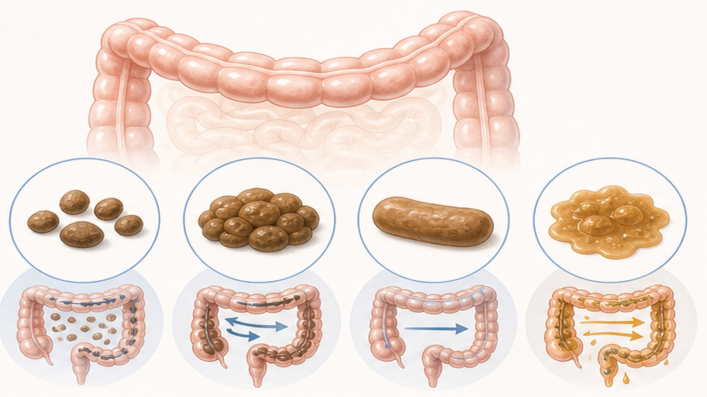
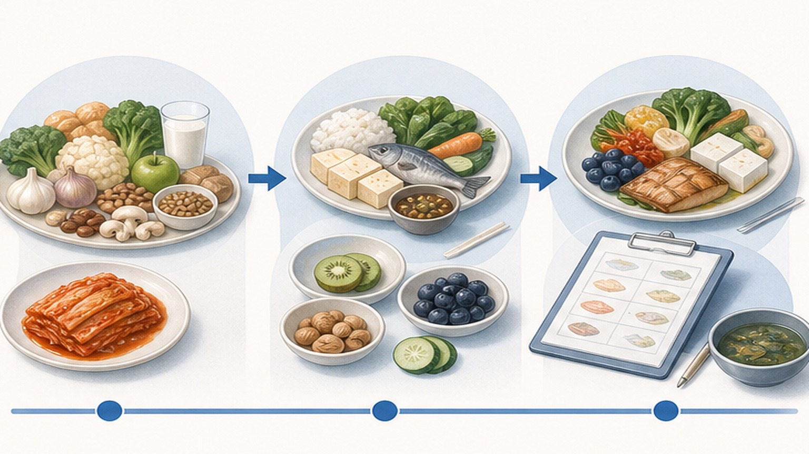
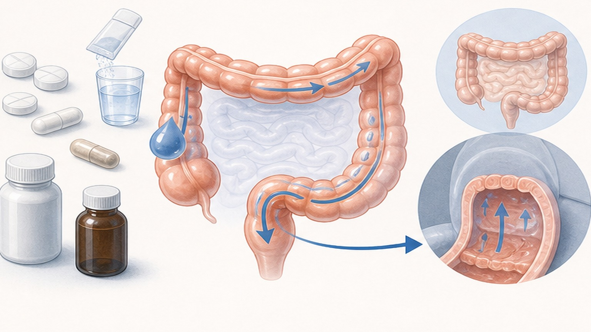
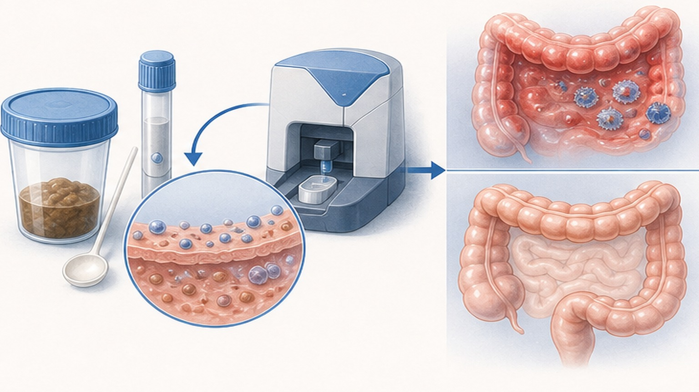

과민성 장 증후군 (IBS),
뇌-장 축의 올바른 이해
Rome IV 진단부터 저포드맵 식단, 아형별 표적 약물 치료까지 — 삶의 질을 회복하는 단계적 관리
IBS는 흔한 질환이며, 암으로 진행하지 않습니다
전 세계 성인의 4~11%가 IBS를 겪고 있으며, 올바른 관리로 충분히 호전 가능합니다
Rome IV 진단기준 — 뇌-장 상호작용 장애
기능성 위장관 질환 (Disorders of Gut-Brain Interaction)
최근 3개월 동안 주 1회 이상의 반복적인 복통이 있고, 배변과 관련되거나 배변 빈도·대변 형태의 변화를 동반할 때 IBS로 진단합니다.
장의 신경이 과민해져 정상적인 장 운동이나 가스 자극도 뇌에서 심각한 통증으로 해석됩니다 — 이를 내장 과민성 (visceral hypersensitivity) 이라 합니다. "예민한 성격" 때문이 아니라 의학적으로 입증된 신경생리학적 변화이며, 자책할 필요가 없습니다. 진단의 시작은 증상 양상과 빈도를 정확히 기록하는 것입니다.
나의 IBS 유형 확인 — 4가지 아형
브리스톨 대변 형태 척도 (Bristol Stool Form Scale, BSFS) 기반 분류 — 약물 선택의 출발점

증상을 폭발시키는 두 가지 핵심 원인
스트레스(뇌-장 축)와 포드맵(FODMAP) — 병의 원인이 아닌 "방아쇠"입니다
한국형 저포드맵 식단 3단계 프로토콜
3단계: elimination → reintroduction → personalization. 평생의 제한이 아닌, 나만의 안전 식재료를 찾는 2-6주 단기 탐색 과정입니다.

변비형 (IBS-C) 표적 약물 치료
단순 하제를 넘어 통증까지 차단하는 최신 약제 — NNT가 낮을수록 효과적
- 기전GC-C 효현제
- 효과변비 + 복통 동시 경감
- NNT7
- 부작용설사 약 16%
- 기전NHE3 억제제
- 효과장내 수분 분비 촉진
- NNT8
- 투여50mg · bid
- 진경제평활근 경련 억제
- Amitriptyline10–25mg · qhs
- 기전통증 수용체 둔화
- 주의항콜린 부작용

설사형 (IBS-D) 표적 약물 치료
장내 미생물 환경 복원 및 운동성 억제 — 비흡수성 항생제의 다면적 효과
- 흡수율< 0.4% (장내 작용)
- 기전SIBO 억제 · 미생물총 재배열
- 투여550mg · tid · 14일
- 반복증상 재발 시 가능
- 기전μ-opioid 효현제
- 효과장 운동성 억제
- NNT10
- 금기담낭절제 · 과음자
- Loperamide대변 굳기 개선
- 한계복통 완화 효과 없음
- 진경제급성 복통 경감
- TCA내장 통증 둔화
IBD와의 감별 — 대변 칼프로텍틴 (FC) 검사
내시경 없이도 염증성 장 질환을 높은 정확도로 배제할 수 있는 핵심 검사 (단위: μg/g)

경고 증상 — 반드시 추가 검사가 필요합니다
아래 증상이 하나라도 있으면 IBS 진단 전에 대장내시경 등으로 대장암·IBD를 반드시 배제해야 합니다
오늘 꼭 기억할 핵심 8가지
IBS는 충분히 관리 가능한 만성 질환 — 단계적 접근(라이프스타일 → 식단 → 약물)으로 호전됩니다
올바른 이해와 단계적 관리로
IBS는 충분히 극복할 수 있습니다
아형 확인 → 저포드맵 식단 → 표적 약물의 순서로 함께 관리하겠습니다 — 궁금한 점은 언제든 문의해 주세요
광교중앙로 298, 4층
토요일 08:30~13:30
같은 자료를 다시 볼 수 있어요